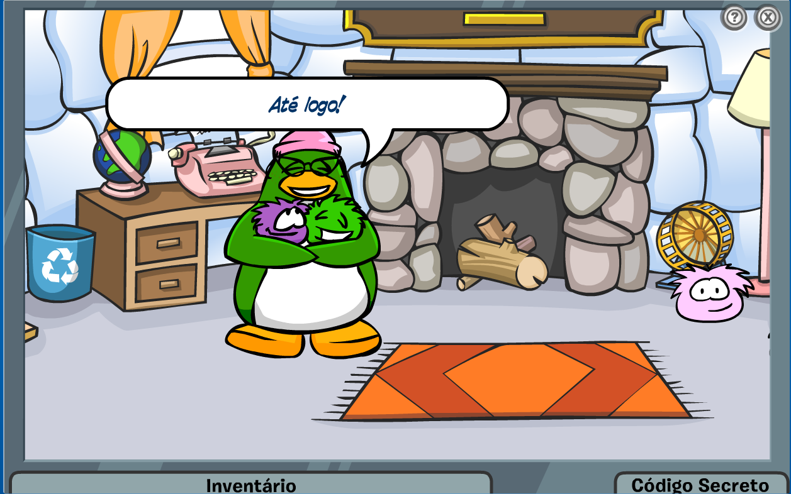

Pinguinando
Personagens
Tia Arctic
Sendo um dos únicos personagens da ilha que possui sardas, Tia Arctic é colunista e diretora-chefe do Club Penguin News. Arctic é a autora da coluna semanal "Pergunte à Tia Arctic", onde responde perguntas enviadas por todos os pinguins. Faixa preta no desafio ninja e uma das maiores amantes de puffles de toda a ilha, tendo sido a primeira pinguim a possuir um puffle roxo dentro do jogo.
Você Sabia?
Arctic aparece na primeira missão da ASP, “O Caso dos Puffles Desaparecidos”, onde é revelado que ela possui 5 puffles: Um puffle verde chamado Cornelius, um puffle azul chamado EleanorMae, um rosa chamado Agent, um roxo chamado Scone e um preto chamado Herbert. Durante a missão, o jogador precisa ajudar Arctic a encontrar seus puffles desaparecidos: Cornelius e Scone. Além disso, em novembro de 2012, foi revelado que Tia Arctic possuía uma personalidade secreta: A Diretoria.
